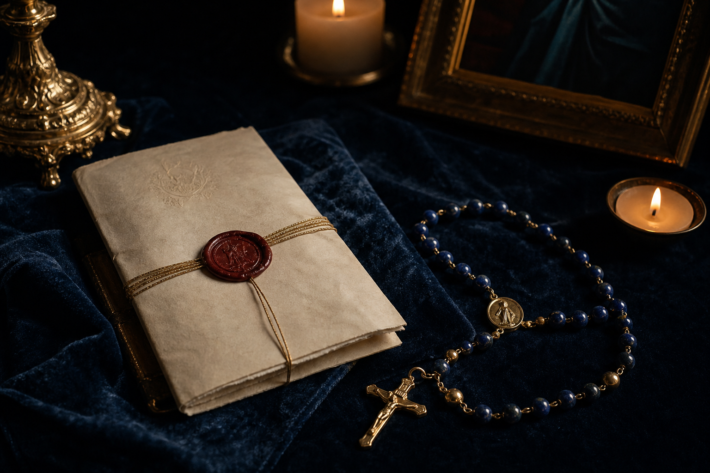
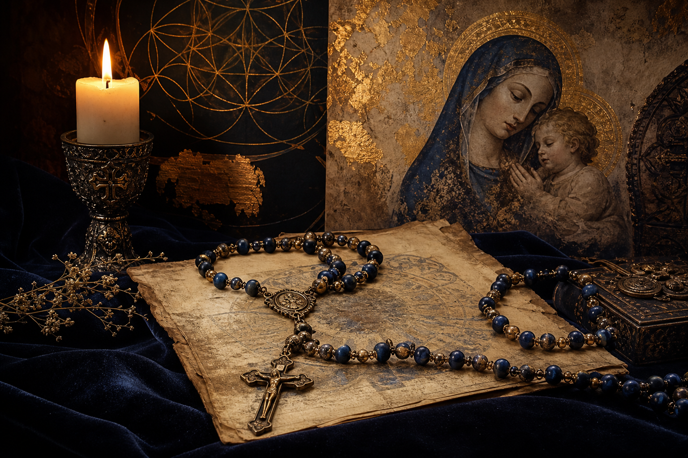

Opening prayer
The Apostles' Creed
I believe in God, the Father almighty...
The Rosary begins inside the faith of the Church. The Creed is not decoration; it is the doorway.
See the prayer guide
A digital Catholic exhibition
A digital exhibition on the prayer Our Lady asked for, the mysteries of Christ it reveals, and the graces it has carried through history.
Walk through the life of Christ with Mary, one mystery at a time.
The main experience
Begin at the cross, descend through the opening prayers, enter the decades, and return to the Hail Holy Queen.
Keep scrolling. The page keeps moving down while the active bead travels down the strand, around the decades, and back up.
Each bead is clickable. Use the physical strand as navigation, then follow the links inside the active bead panel.
Mary does not compete with Christ in the Rosary. She teaches the soul to look at Him.
The Rosary is a meditative Catholic prayer centered on the life, death, and glory of Jesus Christ.
Each decade invites us to contemplate one mystery from the Gospel: the Annunciation, the Nativity, the Baptism of Jesus, the Crucifixion, the Resurrection, Pentecost, and many others.
The Church has often called the Rosary a compendium of the Gospel because it gathers the central events of salvation history into a prayer that can be carried in the hand, prayed in the home, whispered in suffering, or proclaimed in procession.
The Rosary is Marian because we pray it with Mary. It is Christ-centered because every mystery leads us to Jesus.
Many Catholics know the Rosary as a family tradition. Some know it as a daily devotion. Others see it as repetitive and do not yet understand its depth.
This exhibition does not treat every miracle story the same way. Some events are official Church teaching. Some are shrine-documented testimonies. Some are devotional traditions. Some are popular stories that need more evidence.
Faith does not require exaggeration. The truth is already beautiful enough.Official teaching, shrine testimony, biography, history, and popular devotion are related. They are not interchangeable.
The structure is simple. The depth comes from remaining with the mysteries of Christ.
Do not rush. Before each decade, pause and name the mystery. Read or remember one short Scripture passage. Ask for the fruit of the mystery. Picture the scene. When distraction comes, gently return.
The Rosary is not about perfect feelings. It is about faithful presence.
The exhibit distinguishes roots, tradition, papal framing, shrine testimony, and later devotional memory.

Papal framing
Modern papal teaching gave the Rosary a public language for contemplation, peace, family life, and renewed attention to Christ. The form changed; the center did not.
The Joyful, Luminous, Sorrowful, and Glorious Mysteries lead the soul through the Incarnation, public ministry, Passion, and glory of Jesus Christ.
 Approved shrine tradition
Approved shrine tradition
In 1917, Our Lady appeared to three shepherd children in Fatima, Portugal. Her message was urgent: conversion, repentance, prayer, sacrifice, and peace. Again and again, she asked for the daily Rosary.
Pray. Repent. Offer sacrifices. Turn toward God. Pray the Rosary for peace.
Read the Fatima shrine narrative Approved shrine tradition
Approved shrine tradition
When Saint Bernadette encountered the Lady at Lourdes, she prayed the Rosary. Lourdes reminds us that the Rosary is not only a prayer of words. It is a prayer of presence.
The shrine also maintains a serious process for examining alleged healings, joining devotion with careful discernment.
Visit the Lourdes Rosary guide Biographical witness
Biographical witness
Blessed Bartolo Longo was once far from the Catholic faith. His life was transformed, and he became one of the great apostles of the Rosary.
His story shows that the Rosary is also for the lost, the wounded, the confused, and the returning.
Read the Vatican biography Approved shrine tradition
Approved shrine tradition
At Kibeho in Rwanda, the Marian message emphasized conversion, repentance, suffering, and prayer. The Rosary of the Seven Sorrows became especially important in that spiritual tradition.
Kibeho reminds us that Marian devotion is not sentimental. Mary calls her children to repentance and deep conversion.
Read the Kibeho shrine historyThe Rosary has been preached, defended, loved, and carried by saints, popes, shrines, families, and ordinary souls.

The Rosary has long been associated with preaching, contemplation, and teaching the Gospel to ordinary people.
Read more
For de Montfort, the Rosary was a path of conversion, perseverance, and union with Jesus through Mary.
Read more
Leo XIII wrote extensively on the Rosary and helped shape modern papal teaching on it as a response to crises in society, family, and the Church.
Read more
In Rosarium Virginis Mariae, John Paul II described the Rosary as contemplating Christ with Mary and gave the Church the Luminous Mysteries.
Read more
His life moved from spiritual darkness to Marian devotion, from confusion to mission, and from a wounded past to a life of service.
Read moreThe Rosary does not need exaggeration to be powerful. This site names the source strength before it tells the story.
Catholic tradition connects the 1571 victory at Lepanto with Rosary prayer and the intercession of Our Lady. The lesson is not triumphalism. It is dependence.
At Fatima, the Rosary was presented as a prayer for peace: intercession for nations, families, sinners, and the suffering world.
Lourdes is one of the most carefully documented Marian shrines in the world. Not every healing is specifically a Rosary miracle, but Lourdes gives an example of faith, gratitude, investigation, and restraint.
Sometimes the greatest miracle is not the sudden healing of the body. It is the rescue of a soul.
Science cannot prove grace. It cannot measure the intercession of Mary. It cannot reduce prayer to a biological technique.
But science can observe certain human effects of prayer. Some studies suggest that repetitive prayer, including the Rosary, may support slower breathing, greater calm, emotional regulation, coping, and spiritual well-being.
These findings should be understood carefully. The Rosary is not a substitute for medicine. It is not a hack. It is not merely meditation with Catholic words. It is prayer.
Science can observe human effects of prayer. It cannot measure grace.
A daily point of entry for prayer, attention, and one small resolution.
Testimonies of conversion, healing, protection, peace, perseverance, and answered prayer are reviewed before publication. Private experiences are not presented as official Church judgments.
This project was created to help Catholics and seekers rediscover the Holy Rosary as a prayer of contemplation, conversion, peace, and hope.
The goal is not sensationalism. The goal is reverence. The Rosary is beautiful enough when presented truthfully.